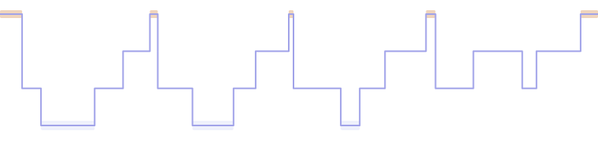
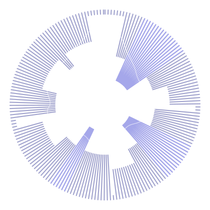
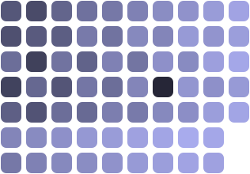

Your pulse follows the vibration.
BeatSleep reads your heart on your Apple Watch, then vibrates on your wrist just under your own rate. Your pulse follows the vibration down, and you fall asleep.
Free, with an optional subscription · Requires an Apple Watch
Not to start, not to lead, not to wake you. The whole mechanism is the vibration motor.
It exists only to prove it is working, and it fades away once you no longer need it.
No sign-in, no server, no analytics, no third-party SDKs. There is nothing to sign up for.
A cadence your body can follow down.
For the first 45 seconds nothing vibrates: BeatSleep measures the rate you are actually resting at, because the descent has to start where you are.
Then the cadence anchors to that rate and sheds four beats every ten minutes, staying just under your pulse, far enough to lead and close enough to be followed. The number on screen is always your real heart rate, never the target, so what you watch is yourself following.
If you turn over, if a noise wakes you, if your pulse climbs, it stops pulling and re-anchors to your real heartbeat within a minute. Restlessness is followed, not fought.

- your pulse
- the cadence
Four phases, and then it leaves you alone.
- Listening0–45 s
Nothing vibrates. BeatSleep measures the rate you are actually resting at, rather than assuming one for you.
- Entrainingthe quarter hour after
The cadence anchors to that rate and descends, staying just under your pulse and re-anchoring whenever you stir.
- Holdingonce you reach your floor
The text decays away and the screen dims to a single slow orb. Nothing asks for your attention again.
- Risinginside your wake window
If you asked for it, the cadence inverts and quickens. You wake to a quickening, not to an alarm.
It ends when it is done.
Five minutes after your pulse has settled at the target, the night closes itself. By then the vibrations have nothing left to do, and a watch that tracks until sunrise is a flat battery by lunchtime.
Or a hard ceiling
Fifteen minutes, an hour, whatever suits. The session stops there whether or not you have settled.
Or the whole night
Led all the way through, with a quickening of the vibration inside your wake window instead of an alarm.
Your floor, not a guess
It starts from your own sleeping minimum in Apple Health, then moves one beat a night on the evidence of your own nights, and never leads you below it.
Apple Watch gives an app no volume for vibration, only a handful of patterns, and most of them carry a tone through the speaker. BeatSleep uses the one that does not, so the person beside you sleeps through your night.
Health tells you that you slept seven hours.
BeatSleep tells you that forty of those minutes were awake, in eleven separate pieces. How long you took to fall asleep. How far your pulse fell below your resting rate. How much the middle of your night moves from one day to the next.
None of it is new data: it is the same data with the arithmetic done, read from Apple Health on your iPhone. Which is also why there is something to look at on the very first morning, including every night from before you installed it.

An example night, drawn by this page. Every figure on this site is made up, and none of them is anybody's measurement.
One night, as a single figure.
Every sleep app draws a night as a bar chart lying on its side. This one bends the night into a circle: it starts at the top, runs clockwise to morning, and each spoke reaches inward as far as that minute was deep. The thin line threaded through it is your pulse, closest to the centre when your heart was slowest.
A night that fell away cleanly is a deep, even flower. A broken one is a ragged ring with the middle eaten out of it. You learn to read your own before you learn to read the numbers, which is the point.


- a worse night
- a better one
- nothing recorded
Scored against your own nights. Never anybody else's.
A number that compares you to a population is worse than no number: it tells a short sleeper they are broken and a bad sleeper they are fine. So the baseline here is your own median, and where there is not yet enough of your history to have one, the screen says which parts are still being learned rather than quietly inventing them.
Tag a night in the morning, whether it was a late meal, a drink or a hard session, and BeatSleep will compare the nights you tagged against the ones you did not. It needs four of each before it will say a word, and it will never tell you that one caused the other.
One screen, and no ring to close.
How long it took you to go under, against your own median, not against anyone else's. The moment your pulse and the cadence converged. How far you were drawn down.
The sentence at the top is written on the phone itself, by the on-device model, in your own language rather than translated out of somebody else's. Nothing is sent anywhere to write it, and it is not allowed to tell you what your night meant: a sleep app that interprets is making a medical claim.
No score against strangers. No streak. No ring to close.
Without opening the app.
Home screen widgets
Last night's Nightprint, and how long it took you to go under. The shape is the answer, so the app only gets opened when you want a reason.
A watch complication
Tonight's plan on the face you are already wearing, and a Control Center button that begins the night from anywhere.
A Live Activity
The descent on the Lock Screen and in the Dynamic Island while it runs, glanceable at arm's length, in the dark, without unlocking anything.
Shortcuts and Siri
Begin a night, lead a breath, or ask how last night went, from a shortcut or an automation.
On the iPad too
Not a phone column blown up. The screen is dealt into columns that fill it, and it follows Stage Manager and Split View as they change.
A breath to wind down
Led by the wrist rather than by a voice, and written into your own Health app as mindful minutes.
There is no server to send it to.
Your heart rate is read from HealthKit on the watch. The summary is computed there, overnight, and travels to your iPhone over Apple's encrypted device link. The only thing written back is the mindful minutes of your descent, into your own Health app.
Optional iCloud sync, off until you turn it on, writes to your own private iCloud database, in encrypted fields. Turning it off deletes those records rather than merely ignoring them. There is no account system, no analytics, no advertising identifier and no third-party SDK anywhere in the app.
You can export everything as a file, or erase it for good, at any time.
Nothing that decides how a sleeping body is led is ever for sale.
Everything that makes the app work.
- The whole session, every night
- The descent, and the failsafe that ends it
- The adaptive floor, learned from your own nights
- Last night, and the last seven
- Your sleep read from Apple Health
- The Tide waveform, the one most wrists prefer
Depth, for the people who want it.
- Every night you have ever recorded
- Trends over weeks, against your own median
- The Thrum and Hush waveforms
- Your nights on all your devices, through your own iCloud
- Export everything as a file
- Six more accents, and three grounds to set them on
Billed to your Apple Account, renewing until you cancel, which you can do at any time in Settings. See the terms of use.
Before you start.
Do I need an Apple Watch?
Yes, for the vibration: the cadence is produced by the watch, and without one the app has nothing to lead you with. The iPhone side still reads your sleep out of Apple Health, so it has something to show you either way.
Will it wake the person beside me?
No. BeatSleep uses the one vibration on Apple Watch that carries no tone through the speaker. It makes no sound at any point: not to start, not to lead, not to wake you.
Does it run down the battery?
It is not meant to run all night. Five minutes after your pulse settles at the target the session closes itself, which is usually a quarter of an hour of watch time. The whole-night mode exists, and it costs what a whole night costs.
Where does my data go?
Nowhere. There is no account and no server. It stays on your devices, and moves between them over Apple's encrypted link, or through your own private iCloud if you switch it on. The privacy policy says so in detail.
Is it a medical device?
No. It does not diagnose, treat, cure or prevent any condition, and nothing it shows you is a medical measurement. If you have a sleep disorder or a heart condition, talk to a doctor rather than to an app.
Tonight, then.
Put the watch on, and let your pulse follow the vibration down.
Free, with an optional subscription · Requires an Apple Watch
BeatSleep is not a medical device. It does not diagnose, treat, cure or prevent any condition. If you have a sleep disorder or a heart condition, talk to a doctor rather than to an app.